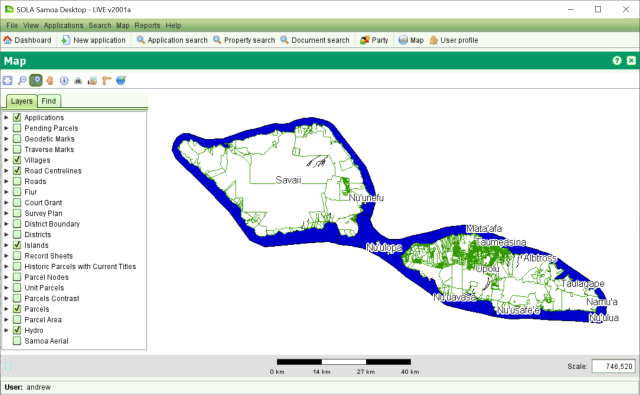

The SOLA Map Viewer allows you to navigate and interact with the
geospatial data managed by SOLA. It can be accessed from the Map >
Ctrl + Open Map menu or selecting 

The SOLA Map Viewer includes a toolbar for navigating and querying the map and two tabs: one Table of Contents that can be used to control the layers displayed on the map and one Find tab that can be used to find parcels in the map The tools provided for the SOLA Map Viewer are:
The SOLA Map Viewer can also support additional map tools for editing and related spatial tasks (e.g. Locate Application). These tools are described in the relevant How To sections
The Table of Contents control identifies the layers that are displayed in the map. You can show or hide these layers by checking or clearing the checkbox for the layer. You can also change the scale represented when printing out the map by extending the layer item and selecting the needed scale range.
The Find Tab allows to find parcels in the either searching by property owner, property or parcel number. You can choose the selection criteria by selecting it in the combo box “Search by” and then start typing in the field below. If more than 2 characters are typed, a free text search is happening (google like search) which gives back the top 10 hits in the list below. Double click in one of the items in the list or click / move with arrow buttons and then press enter. The map will zoom to the location where the cadastre object is found.
The Information Tool can be used to query geospatial features such as parcels, survey control and place names. As geospatial features are often in close proximity or overlap, the Information Tool displays details for all features immediately surrounding the selected location.

The Print Out Tool can be used to print out the visualised map in a pdf file format.
You can turn layers on/off if you want or don't want some of them to be in printout.
Then you can choose a layout. At the moment there is only one A4 but there can be defined as many as needed.
In the same dialog you can choose a scale. An estimated scale is already calculated from the map.
Finally click Print button.
A pdf will be generated and be opened by the default program which opens PDFs. So a PDF Viewer must be installed in the system.
Notice that everywhere in the software there is a map there is a Print button as well and that when printing – additionally - a service of type cadastrePrint is registered in the service table and also marked as completed (if the map window is started by an application, this service is attached to the application)
Also see